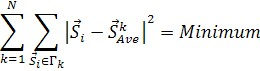
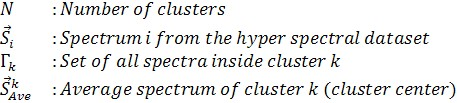

|
聚类分析K均值（数学）
|
K均值聚类算法将高光谱数据集分割为用户定义数量的集合（簇）。通过最小化以下方程来选择这些集合。


对于大量光谱，无法在合理的时间内求解上述方程。因此，使用迭代算法来寻找最小值。该最小值不一定等于全局最小值。算法执行以下步骤：
另请参阅
备注
两个光谱的相似性
为了计算两个光谱的相似性，可以使用差值光谱的长度。长度的倒数是相似性的度量。通常K均值聚类使用欧几里得范数，但有时曼哈顿范数会给出更好的结果（参见 光谱归一化（数学））。
预变换
代替使用原始光谱进行聚类，对高光谱数据集中的所有光谱应用预变换可能是有意义的。
这些预变换的光谱仅用于聚类过程。为了从原始光谱中获得良好的平均光谱，可以使用集合信息（掩模）。